Writing large scale web applications in Clojure can offer a unique challenge. In this series I'll share and walk through the results of a web servers profiling project I have been working on.
My goal? a humble one. Find the best web server in the Clojure ecosystem, and the best way to configure and run the available servers. Along the way, I have already found and PR-ed performance improvement opportunities.
Initial results show that even a naive, non optimized solution with off the shelf routing and server frameworks can easily serve 60k qps on 8 CPU cores with good response times.
As of writing this post, the surprising winners are http-kit and pohjavirta. These are the only servers which managed to get good response times at high percentiles. Also, you should prefer the latest JDKs.
I expect in the future to see more servers join this illustrious bunch as the ring and reitit performance PRs make their way in.
It's not a secret Clojure isn't the fastest language in the world. Immutability and high level of abstraction come at a cost.
At that case, the reader might wonder if Clojure is a good fit for applications which deal with large amounts of data and lots of traffic. We can always provision more machines, but alas, they cost money.
Since May this year, I have been poking and prodding at different web server libraries in Clojure, combined with Metosin's high performance web tech stack.
I set up a profiling environment which used wrk2 at different rates to find the performance limits of the different libraries, across different JVM versions and GC algorithms and produced corresponding flame graphs.
Finally, after nights of experiments, the results are in - while there is still room for improvement, we can go pretty darn fast with Clojure, without special tuning or weird looking code.
In this post and followups, I'll present my findings, methodology and some conclusions and future goals.
A good measure of a server's behavior is its response time to queries at different rates over a long enough period of time.
Long enough is a slightly arbitrary measure, which requires we understand how web servers fail. The entire stack is built on queues. From the operating system kernel to the executor service on the JVM. The server will fail when one of them starts to fill up. Response times will increase until the server starts throwing exceptions, such as RejectedExecutionExceptions from an ExecutorService, or OOM due to an unbounded queue.
Once we have established the server is probably stable at an operating rate, we can measure the latency for requests handling and plot it as a histogram:
50.000% 1.10ms 75.000% 1.49ms 90.000% 1.87ms 99.000% 4.34ms 99.900% 34.27ms 99.990% 73.54ms 99.999% 95.61ms 100.000% 134.65ms
We are interested in three measures:
The acceptable operating rate is usually a function of:
These considerations are relevant to a specific application and can't be judged in a vacuum. For some cases anything above 1ms is unacceptable, while for others a worst case response time of 100ms is fine.
There is a lot of data to wade through, as the results are a product of all these options:
For which you will find HDR plots and flame graphs.
This is too much to take in. The astute reader will notice there are hundreds of possible scenarios. At this stage let us skip right to the interesting bits:
In more than one scenario, several configurations are able to handle at least 60k qps for 10 minutes with room to spare. Finding their upper limit is the immediate next goal.
Let us examine a few characteristic results, to better orient ourselves:
In this example we can see a server which maintains an excellent response time even at 6 nines.
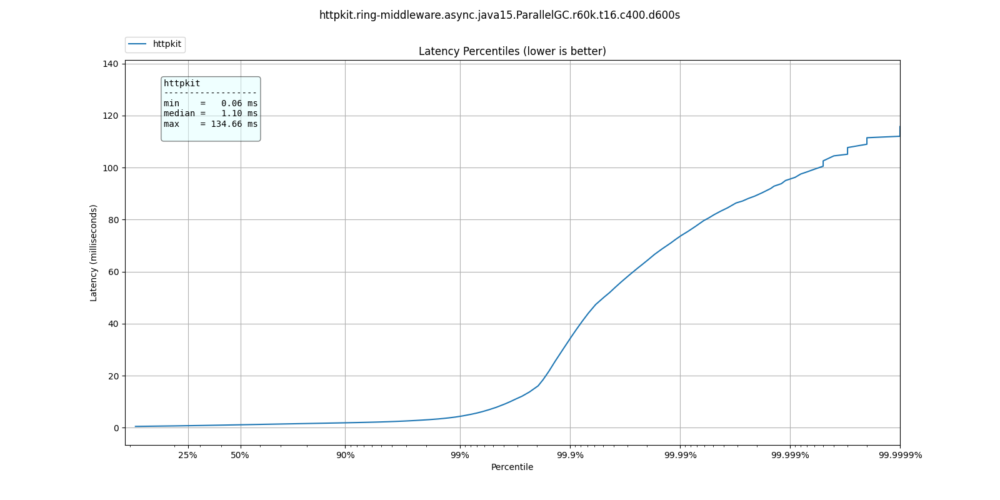
This web server's response time has a sharp jump, also known as a "wall"
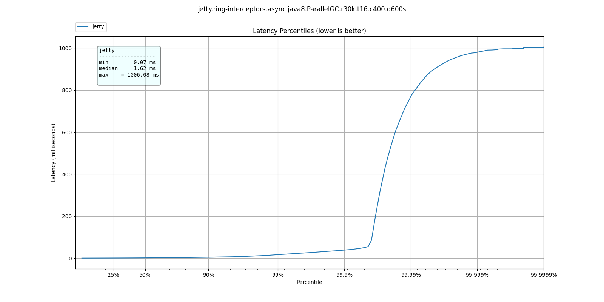
As the requests rate increases, the jump in response time becomes less sharp, where the bad response times move closer to lower percentiles
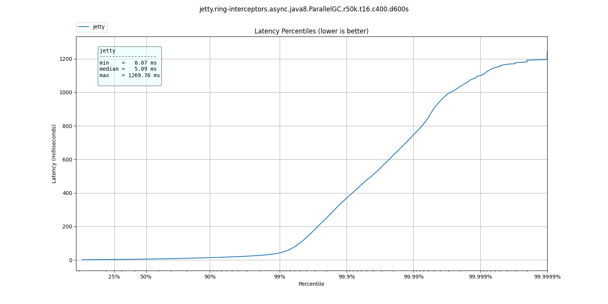
At some point the requests come in faster than the server can process them and for all intents and purposes, it is non-responsive.
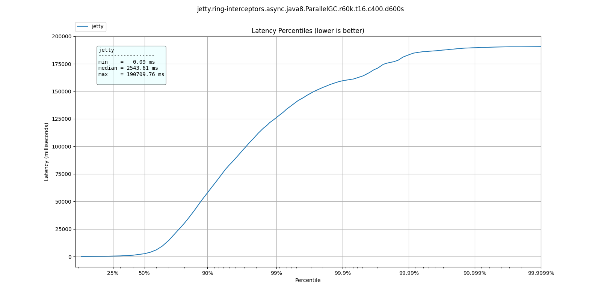
These are the types of results you can expect to see. Lower is better.
Since we are interested in seeing how servers perform under high loads, we want the scenarios where the worst response times at the highest rates are still good.
What are good response rates? This is a qualitative question, but at the bare minimum, we would consider results under 200ms as "good", under 1s acceptable, and anything over should be avoided for high work loads.
As of this writing, only http-kit and pohjavirta have managed to get good response times at 60k qps. I expect that to see better showings after some PRs have made their way into ring and reitit.
The JVM offers a variety of Garbage Collectors suitable for different use cases.
The general guideline is that choice of correct algorithm should be informed by responsiveness and latency requirements.
From Oracle's documentation:
Throughput is the percentage of total time not spent in garbage collection considered over long periods of time. Throughput includes time spent in allocation (but tuning for speed of allocation generally isn't needed).
Latency is the responsiveness of an application. Garbage collection pauses affect the responsiveness of applications
On the axis of throughput <-> responsiveness, the available collectors can be ordered as:
Throughput : ParallelGC, G1GC, (ZGC, ShenandoahGC) : Responsiveness
At 30k qps These are the latency distributions for the different garbage collectors
| % tile | ParallelGC | G1GC | ShenandoahGC | ZGC |
| 50.000% | 3.06ms | 1.33ms | 1.13ms | 1.32ms |
| 75.000% | 4.90ms | 2.08ms | 1.55ms | 1.88ms |
| 90.000% | 9.03ms | 5.04ms | 2.01ms | 4.46ms |
| 99.000% | 17.38ms | 14.45ms | 12.38ms | 14.23ms |
| 99.900% | 23.01ms | 20.08ms | 18.99ms | 20.19ms |
| 99.990% | 32.26ms | 25.79ms | 25.22ms | 26.67ms |
| 99.999% | 39.78ms | 31.77ms | 32.11ms | 32.45ms |
| 100.000% | 52.19ms | 42.94ms | 41.34ms | 39.33ms |
Like we'd expect, ParallelGC has the worse response times for every percentile.
ShenandoahGC and ZGC seem to also give better response times than G1GC, as expected from responsiveness optimized collectors.
You can see these plots below:
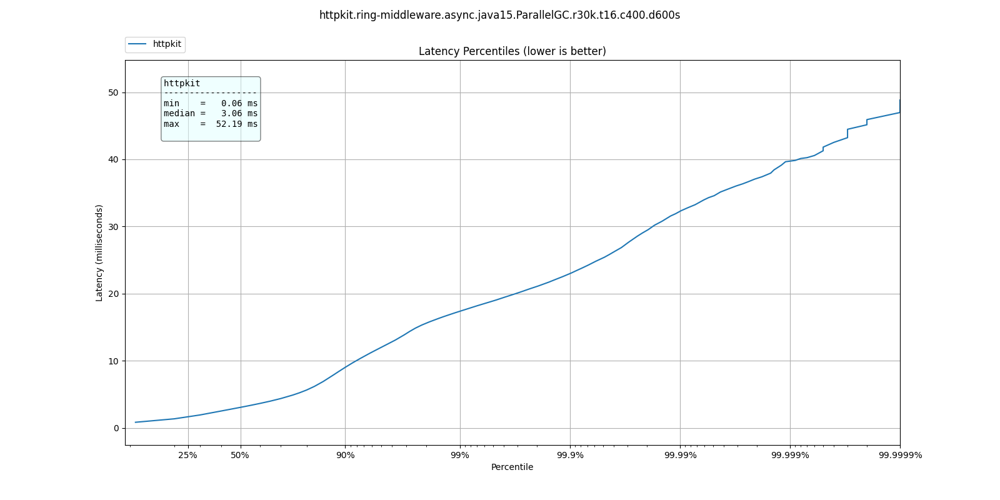
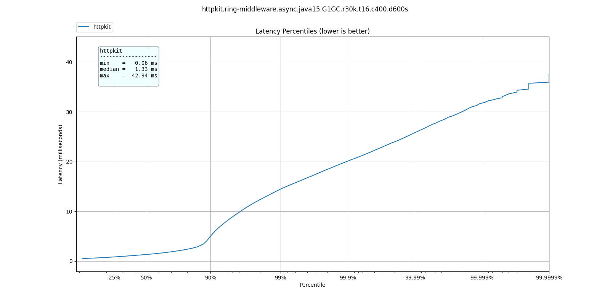
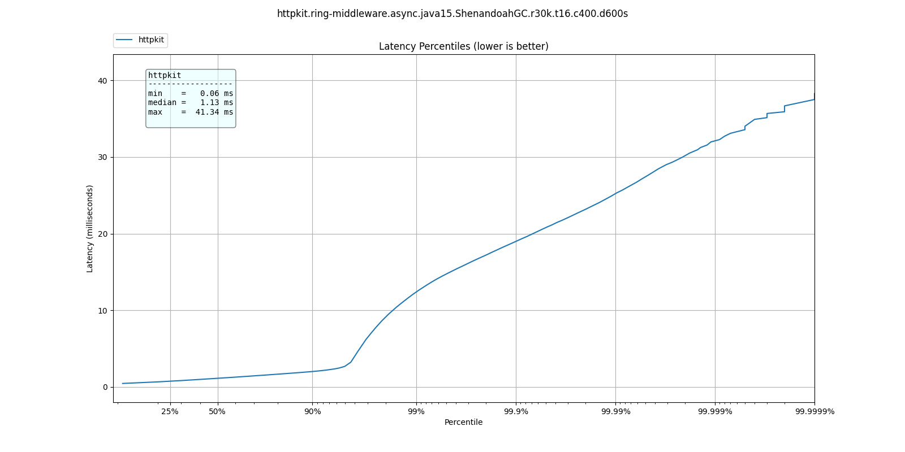
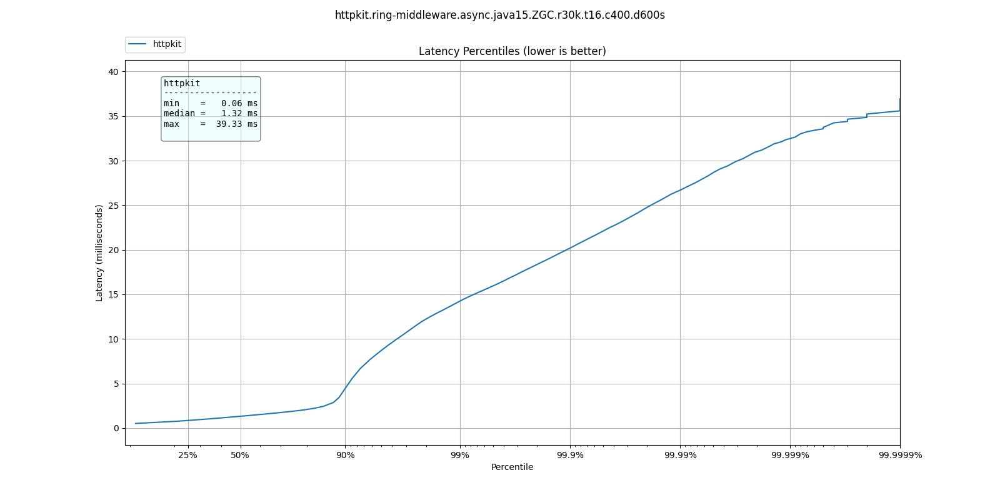
At 60k qps we see a very different behavior, where ParallelGC offers better response times:
| % tile | ParallelGC | G1GC | ShenandoahGC | ZGC |
| 50.000% | 1.10ms | 1.34ms | 1.40ms | 1.43ms |
| 75.000% | 1.49ms | 1.83ms | 1.91ms | 1.93ms |
| 90.000% | 1.87ms | 2.40ms | 2.61ms | 2.47ms |
| 99.000% | 4.34ms | 9.13ms | 11.33ms | 9.18ms |
| 99.900% | 34.27ms | 79.87ms | 82.88ms | 41.95ms |
| 99.990% | 73.54ms | 766.46ms | 530.94ms | 531.46ms |
| 99.999% | 95.61ms | 978.94ms | 954.88ms | 955.39ms |
| 100.000% | 134.65ms | 1.00s | 1.00s | 1.00s |
What do these results mean? I'm not sure. Not only is ParallelGC better than all other collectors, all collectors exhibit better response times at 60k than at 30k qps.
It's possible at these rates the application becomes throughput dominated which would explain why ParallelGC performs better at the tail percentiles.
Any explanation of these results would be welcome.
As before, plots of these results can be found below:
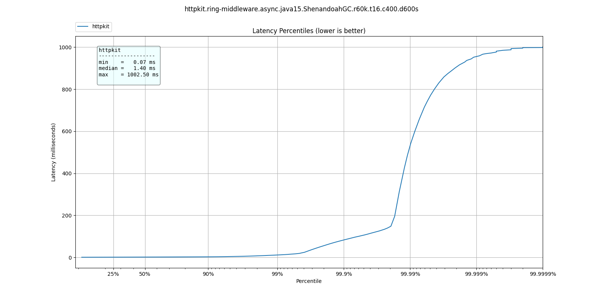
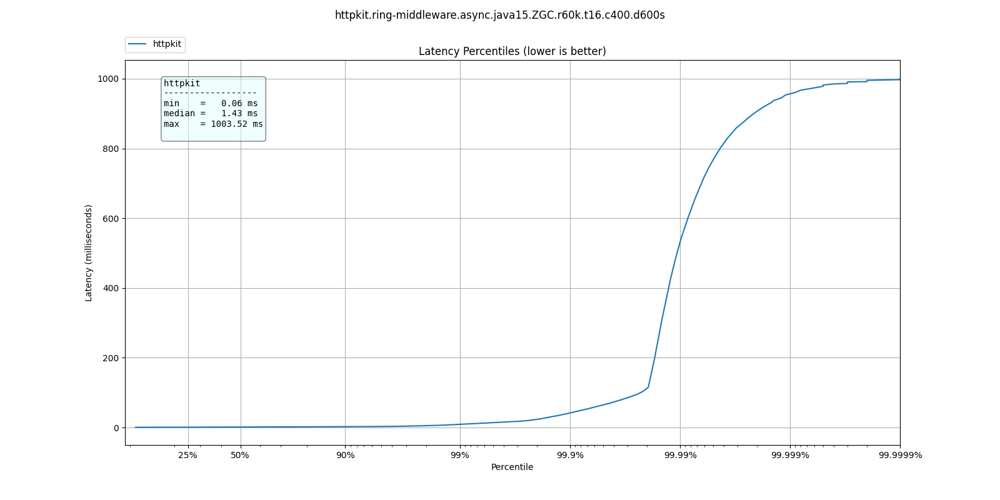
By embedding clj-async-profiler in the application, I was able to profile its behavior under load. We can use these results to understand where we're being wasteful of CPU cycles.
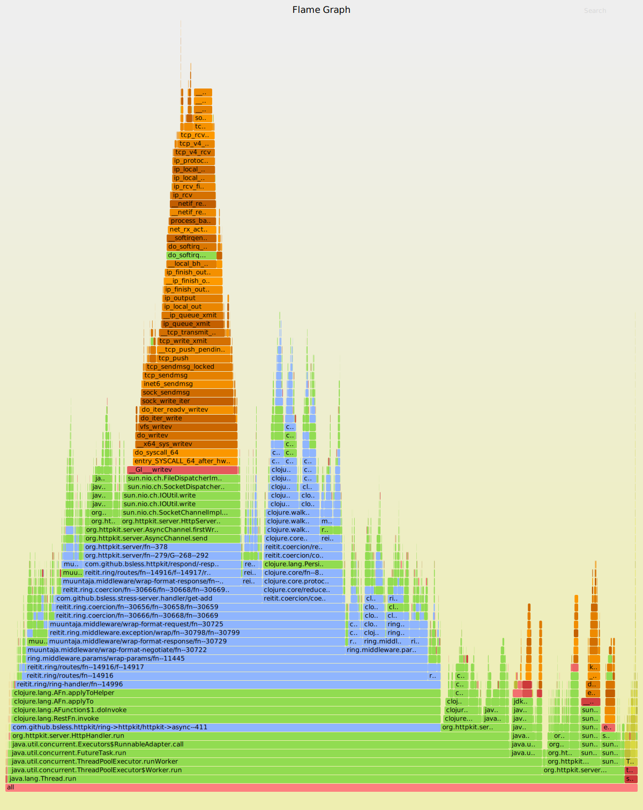
We can recognize several areas of interest in the graph:
Takes about 13% of CPU, why is it so expensive?
If you zoom in on it, two things should draw your attention:
merge-with merge, two relatively wasteful functions, called in
assoc-query-params and assoc-form-paramsparse-params uses regular expressions
On their own, these are not severe problems which require remedy,
but when dealing with high work loads, merge and regular
expressions on the hot-path have a measurable cost.
Another 13% of CPU, with two thirds of it accounted for by
clojure.walk/keywordize-keys.
The rest is malli's coercion which could probably be optimized some more.
Each implementation would have its own issues, but if we take
http-kit as the current example, take a look at the 3rd stack from
the right, org.httpkit.server.ClojureRing.buildRequestMap.
It can be cut in half.
One of the biggest pitfalls when referring to examples is they might not be optimized for our use case.
Yes, it was written clearly in reitit's and muuntaja's documentation. Do you always refer back to the documentation when you already think you know?
By default, reitit's ring handler injects the route and match objects to the request. It's great for development time and dynamism, not so much for performance. Removing this option easily shaves off a few % from CPU.
As I was analyzing the flame graphs (you can probably find them in the git history) I found that http-kit was wasting a lot of CPU between taking the response out of the AsyncChannel and writing it to the NIO socket, creating DynamicBytes.
It took me some time to realize that the body it was handling wasn't a byte-array, but an InputStream, so instead of taking the optimized code path, it read the entire stream to a dynamic byte buffer then wrote it to the NIO socket.
Who was sending an InputStream back? Turns out, it was me. Muuntaja's default behavior is returning an input stream, and it has to be configured explicitly to return a byte array, which is faster for jsonista to write and for other libraries to consume.
It was written clearly in the documentation, it's just been a long time since I referred to it, so I missed it.
In previous iterations (months ago) I found that muuntaja was consistently recalculating a value which was supposed to be cached.
content-type is not required for GET requests. Not providing content type causes fast-memoize to always cache miss and run. It is simple to fix, will provide a MR - #123
Aleph used to give ridiculous response times after long enough runs (few minutes), indicating a probable memory leak. Attaching to the running server with VisualVM revealed that was indeed the situation.
I'm still not even sure what caused this leak, I've been unable to find the source, but after returning bytes from muuntaja and not injecting the match and route it went away.
I haven't found the limit for each server yet, but with minimal configuration we can get over 60k qps on a 8 core Intel i7-6820HQ on a Dell laptop.
Unless you have huge scale problems, I wouldn't worry about it.
If you have scale problems and your servers are on fire, consider maybe you're doing something you shouldn't, like blocking the event loop. The servers, even with stock somewhat wasteful middleware, can handle it.
Before you start tearing out servers or rushing to rewrite your application, remember to make an informed decision. To make that, you need information. Profile your application, preferably under real operating conditions.
Making sure you aren't blocking some event loop and that your threads and pools are allocated sensibly first.
In short:
http-kit's channel lets us transform a non-blocking ring handler to one which its server can use.
The "right" place to transform the handler is at the edge, see
start-server.
It may be useful to invoke the handler in another thread pool, which I have not tested yet.
(require '[org.httpkit.server :as http]) (defn respond [channel] (fn -respond [response] (http/send! channel response))) (defn raise [channel] (fn -raise [?error] (http/send! channel ?error) (http/close channel))) (defn ring->httpkit [handler] (fn httpkit->async [request] (when-let [ch (request :async-channel)] (handler request (respond ch) (raise ch)) {:body ch}))) (defn start-server [options] (http/run-server (ring->httpkit handler) options))
Remember to disable match and router injection when instantiating the ring-handler
(ring/ring-handler (ring/router routes router-options) default-handler {:inject-match? false ;; these two right here! :inject-router? false})
When performance matters, make sure to set the return type to bytes
(m/create (merge m/default-options {:return :bytes}))
plug the muuntaja instance in router-options at [:data :muuntaja].
First order of business is pushing each configuration to its breaking point, just so see how far we can go. That's before doing any optimization or tuning.
Next will be a post which explains the profiling process and automation the performance space search, saving the need to manually set the run rates.
Once the profiling process is fully automated, I'll be able to throw in additional JDKs into the mix.
On a different track, the results of these experiments have already birthed several PRs to ring, reitit and http-kit. Once they are merged I can rerun all the experiments with them and get new and improved results. My poor machine.
Finally, there is certainly room for informed design optimizations, such as thread pools assignment. It's possible some servers have been using the same pool for the event loop and processing requests which degraded their results.